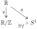

Section 1.11 Quotients
Topological specimen 14. Quotient space.
Let \((X,\mathcal{T})\) be a topological space, let \(Y\) be a set (not necessarily a topological space), and let \(q\colon X\rightarrow Y\) be a surjective function. The collection
\begin{equation*}
\mathcal{T}'=\{U\subset Y\colon q^{-1}(U)\in \mathcal{T}\}=\{U\subset Y\colon q^{-1}(U) \text{ open in } X\}
\end{equation*}
is a topology on \(Y\) called the quotient topology on \(Y\) with respect to \(q\text{,}\) and we call \(Y\) a quotient of the space \(X\text{.}\) Furthermore the map \(q\) is continuous with respect to \(\mathcal{T}'\text{.}\)
Proof.
Assuming
\(\mathcal{T}'\) is a topology, it is easy to see that
\(q\) is continuous with respect to it. Indeed, by definition
\(q^{-1}(U)\in \mathcal{T}\) if and only if
\(U\in \mathcal{T}'\text{.}\) (In fact,
\(q\) satsifies the stonger property of being a
quotient map. See
Definition 1.11.4.)
Let’s show that \(\mathcal{T}'\) is indeed a topology on \(Y\text{.}\)
Since \(q^{-1}(\emptyset)=\emptyset\in \mathcal{T}\) and \(q^{-1}(Y)=X\in \mathcal{T}\text{,}\) we see that \(\emptyset\in \mathcal{T}'\) and \(Y\in \mathcal{T}'\text{.}\)
Assume \(\{U_i\}_{i\in I}\) is a collection of elements of \(\mathcal{T}'\text{.}\) By definition, this means that \(q^{-1}(U_i)\) is open in \(X\) for all \(i\in I\text{.}\) Since
\begin{align*}
q^{-1}\left( \bigcup_{i\in I}U_i\right) \amp = \bigcup_{i\in I} q^{-1}(U_i)
\end{align*}
we see that \(q^{-1}\left( \bigcup_{i\in I}U_i\right)\) is open in \(X\text{,}\) being a union of open sets. It follows by definition that \(\bigcup_{i\in I}U_i\in \mathcal{T}'\) , as desired.
We have
\begin{align*}
U_1,U_2\in \mathcal{T}' \amp \iff q^{-1}(U_1), q^{-1}(U_2)\in \mathcal{T} \\
\amp \implies q^{-1}(U_1)\cap q^{-1}(U_2)\in \mathcal{T}'\\
\amp \implies q^{-1}(U_1\cap U_2)\in \mathcal{T}' \amp (q^{-1}(U_1\cap U_2)=q^{-1}(U_1)\cap q^{-1}(U_2))\\
\amp \iff U_1\cap U_2\in \mathcal{T}'\text{.}
\end{align*}
Definition 1.11.1. Quotient by an equivalence relation.
Let \(X\) be a topological space, and suppose an equivalence relation \(\sim\) is defined on \(X\text{.}\) Given \(x\in X\text{,}\) let
\begin{equation*}
[x]_\sim=\{y\in X\colon x\sim y\}
\end{equation*}
be its equivalence class with respect to \(\sim\text{,}\) and let \(X/\sim\) be the set of all equivalence classes of \(X\text{:}\) i.e.,
\begin{equation*}
X/\sim\, =\{[x]_\sim\, \colon x\in X\}\text{.}
\end{equation*}
The function
\begin{align*}
q\colon X \amp \rightarrow X/\sim \\
x \amp \mapsto [x]_\sim
\end{align*}
is easily seen to be surjective, and satisfies \(q(x)=q(x')\) if and only if \(x\sim x'\text{.}\) The set \(X/\sim\) equipped with the quotient topology with respect to \(q\) is called the quotient of \(X\) by the equivalence relation \(\sim\). We call \(q\) the defining quotient map of \(X^*\text{.}\)
Example 1.11.3.
For each quotient space \(X^*=X/\sim\) give an explicit description of the equivalence classes and identify (without proof) what familiar space the quotient might be homeomorphic to.
\(X=[0,1]\text{,}\) \(X^*\) obtained by identifying \(0\) and \(1\)
\(X=\R\text{,}\) \(X^*=X/\sim\text{,}\) where \(x\sim y\) if and only if \(x=y+n\) for some \(n\in \Z\)
\(X=[0,1]\times [0,1]\text{,}\) \(X^*\) obtained by identifying \(P=(0,y)\) and \(Q=(1,y)\) for all \(y\in [0,1]\)
\(X=[0,1]\times [0,1]\text{,}\) \(X^*\) obtained by identifying \(P=(0,y)\) and \(Q=(1,y)\) for all \(y\in [0,1]\) and all \(R=(x,0)\) and \(S=(x,1)\) for \(x\in [0,1]\text{.}\)
Solution.
Let \(\sim\) be the equivalence relation described. For any \(x\in [0,1]\text{,}\) its equivalence class \([x]_\sim\) is either \(\{x\}\text{,}\) if \(x\notin \{0,1\}\text{,}\) or \(\{0,1\}\text{,}\) if \(x\in \{0,1\}\text{.}\) We imagine making the identification of \(0\) and \(1\) as taking a line segment and connecting the two endpoints. Since that object is loop-like, we guess that the quotient \(X^*\) is homeomorphic to the circle \(S^1=\{(x,y)\in \R^2\colon x^2+y^2=1\}\text{.}\)
For any \(x\in \R\) its corresponding equivalence class is
\begin{equation*}
[x]_\sim=\{x+n\colon n\in \Z\}\text{.}
\end{equation*}
It is easy to see that every \(x\in \R\) is equivalent to an element \(x'\in [0,1]\text{,}\) so that under this identification \(\R\) is first “collapsed” to the interval \([0,1]\text{.}\) Since furthermore \(0\sim 1\text{,}\) we guess that \(X^*\) is homeomorphic to the quotient space in (a), and hence also to \(S^1\)
For \((x,y)\in [0,1]\times [0,1]\text{,}\) its equivalence class \([(x,y)]_\sim\) is either \(\{(x,y)\}\text{,}\) if \(x\notin \{0,1\}\text{,}\) and \(\{(0,y), (1,y)\}\) if \(x\in \{0,1\}\text{.}\) Geometrically this is like taking the square \([0,1]\times [0,1]\) and glueing its two vertical sides together, where we take care to match up the top corners with the top corners and bottom corners with bottom corners. The result of such an operation is a cylinder, our guess for what \(X^*\) is homeomorphic to.
For \((x,y)\in [0,1]\times [0,1]\text{,}\) its equivalence class \([(x,y)]_\sim\) is either \(\{(x,y)\}\text{,}\) if \(\{x,y\}\cap\{0,1\}=\emptyset\text{,}\) \(\{(0,y), (1,y)\}\) if \(\{x,y\}\cap \{0,1\}=\{x\}\text{,}\) \(\{(x,0), (x,1)\}\) if \(\{x,y\}\cap \{0,1\}=\{y\}\text{,}\) and \(\{(0,0),(0,1),(1,0),(1,1)\}\) if \(\{x,y\}\cap \{0,1\}=\{0,1\}\text{.}\) Geometrically this is like taking the square \([0,1]\times [0,1]\text{,}\) first glueing its two vertical sides together to get a cylinder, and then glueing the top and bottom edges of this cylinder together to get a doughnut, or torus. Thus we expect \(X^*\) is homeomorphic to a torus in \(\R^3\text{.}\)
In order to prove our claims in
Example 1.11.3 we want an easy way to produce a homeomorphism from a quotient space to some other (familiar) topological space. It turns out that the key to doing so lies in identifying a universal mapping property of the map
\(q\colon X\rightarrow X^*\text{.}\) The map
\(q\) is a special type of map called a
quotient map; and as described in
Theorem 1.11.10, quotient maps enjoy a very useful mapping property that we can exploit to produce homeomorphisms.
Definition 1.11.4. Quotient map.
Let \(X\) and \(Y\) be topological spaces. A function \(f\colon X\rightarrow Y\) is a quotient map if it satisfies the following properties:
\(f\) is surjective;
\(U\subseteq Y\) is open if and only if \(f^{-1}(U)\subseteq X\) is open.
It follows immediately from the definition that a quotient map is continuous.
Theorem 1.11.5. Quotient maps and quotient spaces.
Let \(f\colon X\rightarrow Y\) be a surjective map between two topological spaces, and let \(\mathcal{T}_Y\) be the topology on \(Y\text{.}\) The following are equivalent.
\(q\) is a quotient map.
\(\mathcal{T}_Y\) is the quotient topology on \(Y\) with respect to \(q\text{.}\)
Proof.
Let \(\mathcal{T}_X\) be the topology on \(X\text{.}\) We have
\begin{align*}
\mathcal{T}_Y \text{ the quotient topology} \amp \iff \mathcal{T}_Y=\{U\colon q^{-1}(U)\in \mathcal{T}_X \}\\
\amp \iff U\in \mathcal{T}_Y \text{ if and only if } q^{-1}(U)\in \mathcal{T}\\
\amp \iff q \text{ a quotient map}\text{.}
\end{align*}
Definition 1.11.6. Saturated sets.
Let \(f\colon X\rightarrow Y\) be a function. A set \(A\subseteq X\) is saturated with respect to \(f\) if any one of the following equivalent properties holds:
\(f^{-1}(f(A))=A\text{.}\)
For all \(a\in A\text{,}\) we have \(f^{-1}(\{f(a)\})\subseteq A\)
\(A=f^{-1}(B)\) for some \(B\subseteq Y\text{.}\)
Theorem 1.11.7. Quotient map properties.
Let \(f\colon X\rightarrow Y\) be a continuous surjective function. The following statements are equivalent.
\(f\) is a quotient map.
\(f(U)\) is open for all open saturated sets \(U\subseteq X\text{.}\)
\(f(C)\) is closed for all closed saturated subsets \(C\subseteq X\text{.}\)
\(C\subseteq Y\) is closed in \(Y\) if and only if \(f^{-1}(C)\) is closed in \(X\text{.}\)
Let \(f\) be continuous and surjective. If \(f\) is an open map or a closed map, then it is a quotient map. In particular, homeomorphisms are quotient maps.
The composition of two quotient maps is a quotient map.
Proof.
Statement (3) is straightforward. Statement (2) follows easily from (1) using equivalent statements (b) and (c), respectively.
Proof of (1).
We prove the cycle of implications
\begin{equation*}
(a)\implies (b)\implies (c)\implies (d)\implies (a)\text{.}
\end{equation*}
\((a)\implies (b)\text{.}\) Assume \(f\) is a quotient map. Let \(U\subseteq X\) be open and saturated. Since \(U\) is saturated, we have \(U=f^{-1}(V)\) for some set \(V\subseteq Y\text{.}\) Since \(f\) is a quotient map and \(U\) is open, the set \(V\) is open. Lastly, since \(f\) is surjective we have
\begin{equation*}
f(U)=f(f^{-1}(V))=V\text{.}
\end{equation*}
This proves that \(f(U)\) is open for any open \(U\subseteq X\text{.}\)
\((b)\implies (c)\text{.}\) Assume \(C\subseteq X\) is closed and saturated. Since \(C\) is saturated, we have \(C=f^{-1}(B)\) for some \(B\subseteq Y\text{.}\) Let \(U=C^c\text{,}\) an open set. Furthermore, since
\begin{equation*}
U=C^c=(f^{-1}(B))^c=f^{-1}(B^c)\text{,}
\end{equation*}
we see that \(U\) is saturated. Using (2), we may conclude that \(f(U)\) is open. Again, using the fact that \(f\) is surjective, we have
\begin{equation*}
f(U)=f(f^{-1}(B^c))=B^c\text{.}
\end{equation*}
It follows that \(B^c\) is open, and hence \(B\) is closed. Since
\begin{equation*}
f(C)=f(f^{-1}(B))=B\text{,}
\end{equation*}
we conclude that \(f(C)\) is closed, as desired.
\((c)\implies (d)\text{.}\) Since \(f\) is assumed to be continuous, we need only show that if \(f^{-1}(C)\) is closed, then \(C\) is closed. If \(C'=f^{-1}(C)\) is closed, then it is a closed saturated set. By (c), we conclude that \(f(C')\) is closed. But since \(f\) is surjective, we have
\begin{equation*}
f(C')=f(f^{-1}(C))=C\text{.}
\end{equation*}
Thus \(C\) is closed, as desired.
\((d)\implies (a)\text{.}\) Since \(f\) is assumed to be continuous, we need only show that if \(f^{-1}(U)\) is open, then \(U\) is open. If \(V=f^{-1}(U)\) is open, then \(V^c=f^{-1}(U^c)\) is closed. Using (d), we conclude that \(U^c\) is closed and hence \(U\) is open, as desired.
The following theorem is often useful when investigating the restriction of a quotient map to a subspace. You find its proof in Munkres.
Theorem 1.11.8.
Let \(q\colon X\rightarrow Y\) be a quotient map, let \(Z\subseteq X\) be saturated with respect to \(q\text{,}\) and consider the restriction \(q\vert_Z\colon Z\rightarrow q(Z)\text{,}\) where \(Z\) and \(q(Z)\) are endowed with subspace topologies.
If \(Z\) is open or closed, then \(q\vert_Z\) is a quotient map.
If \(q\) is an open map or a closed map, then \(q\vert_Z\) is a quotient map.
Definition 1.11.9. Fibers of maps.
For any function \(f\colon X\rightarrow Y\) between sets and element \(y\in Y\text{,}\) we call \(f^{-1}(\{y\})\) the fiber of \(f\) lying over \(y\). We say a function \(g\colon X\rightarrow Z\) agrees on fibers of \(f\) if
\begin{equation*}
f(x)=f(x')\implies g(x)=g(x')
\end{equation*}
for all \(x,x'\in X\text{.}\)
Theorem 1.11.10. Universal mapping property of quotient maps.
Let \(q\colon X\rightarrow Y\) be a quotient map. Assume \(g\colon X\rightarrow Z\) is a continuous function that agrees on fibers of \(q\text{:}\) i.e., we have
\begin{equation}
q(x)=q(x') \implies g(x)=g(x')\tag{1.11.1}
\end{equation}
for all \(x, x'\in X\text{.}\)
There is a unique continuous function
\(f\colon Y\rightarrow Z\) satisfying
\(g=f\circ q\text{.}\) Indeed, the function
\(f\) must be defined as
\begin{equation}
f(y)=g(x)\text{,}\tag{1.11.2}
\end{equation}
where \(x\) is any element of \(X\) satisfying \(q(x)=y\text{.}\)
The function \(f\) is injective if and only if \(g\) satisfies
\begin{equation*}
g(x)=g(x') \iff q(x)=q(x')
\end{equation*}
for all \(x, x'\in X\text{.}\)
The function \(f\) is a quotient map if and only if \(g\) is a quotient map.
The function \(f\) is a homeomorphism if and only if \(g\) is a quotient map and satisfies
\begin{equation*}
g(x)=g(x') \iff q(x)=q(x')
\end{equation*}
for all \(x, x'\in X\text{.}\)
Proof.
Assume we have \(g\colon X\rightarrow Z\) as described. Define \(f\colon Y\rightarrow Z\) via the following recipe: given \(y\in Y\text{,}\) pick any \(x\in X\) such that \(q(x)=y\) (possible since \(q\) is surjective); now define \(f(y)=g(x)\text{.}\) Two comments:
To make sure \(f\) as described is well-defined, we must make sure that the definition of \(f(y)\) does not depend on the choice of \(x\) involve: i.e., if you happen to pick another \(x'\) such that \(q(x')=y\text{,}\) we must make sure that \(g(x)=g(x')\text{.}\) This is precisely what is guaranteed by the condition that \(q(x)=q(x')\implies g(x)=g(x')\text{.}\)
Since we want \(g=f\circ p\text{,}\) this definition of \(f\) is forced upon us: given \(y=q(x)\text{,}\) we must have \(f(y)=f(q(x))=g(x)\text{.}\) Thus \(f\) is unique.
Now we must show \(f\) is continuous. Given any open \(V\subseteq Z\text{,}\) to show that the set \(U=f^{-1}(V)\) is open, we will make use of the fact that \(q\) is a quotient map: namely, it suffices to show that \(q{-1}(U)\) is open in \(X\text{.}\) But we have
\begin{equation*}
q^{-1}(U)=q^{-1}(f^{-1}(V))=(f\circ q)^{-1}(V)=g^{-1}(V),
\end{equation*}
since \(g=f\circ q\text{.}\) Since \(g\) is continuous, we conclude that \(q^{-1}(U)=g^{-1}(V)\) is open, as desired.
-
Assume \(f\) is injective. Since \(g=f\circ q\text{,}\) given any \(x,x'\in X\) with \(g(x)=g(x')\text{,}\) we have \(f(q(x))=f(q'(x))\text{.}\) Since \(f\) is injective, we conclude \(q(x)=q(x')\text{,}\) as desired.
Assume \(g(x)=g(x')\implies q(x)=q(x')\) for all \(x,x'\in X\text{.}\) We will show \(f\) is injective. To this end suppose \(f(y)=f(y')\) for some \(y=q(x)\) and \(y'=q(x')\text{.}\) Since \(g=f\circ q\) it follows that \(g(x)=g(x')\text{,}\) and hence, using our assumption, \(y=q(x)=q(x')=y'\text{,}\) as desired.
If
\(f\) is a quotient map, then so is the composition
\(g=f\circ q\) by statement (3) of
Theorem 1.11.7. Assume
\(g\) is a quotient map. We know from (1) of the theorem that
\(f\) is continuous. Furthermore, since
\(g\) is surjective and
\(g=f\circ q\text{,}\) it follows that
\(f\) must be surjective. Now suppose
\(U=f^{-1}(V)\) is open in
\(Y\text{.}\) Since
\(q\) is continuous, the set
\(W=q^{-1}(U)\) is open in
\(X\text{.}\) We have
\begin{equation*}
W=q^{-1}(U)=q^{-1}(f^{-1}(V))=(f\circ q)^{-1}(V)=g^{-1}(V)\text{.}
\end{equation*}
This shows
\(W\) is an open saturated set with respect to
\(g\text{.}\) Since
\(g\) is a quotient map, it follows that
\(g(W)\) is open (
Theorem 1.11.7). As we saw above,
\(p^{-1}(U)=g^{-1}(V)\text{,}\) which is a saturated open set of
\(X\text{.}\) Since
\(g\) is a quotient map, the set
\(g(g^{-1}(V))\) is open. But again, because
\(g\) is surjective, we have
\(g(g^{-1}(V))=V\text{.}\)
Example 1.11.11. Quotient by an equivalence relation.
Let \(X\) be a topological space, let \(q\colon X\rightarrow Y\) be a surjective function, and let \(\sim\) be the equivalence relation defined on \(X\) as \(x\sim x'\) if and only if \(q(x)=q(x')\text{.}\)
Prove: \(X/\sim\) is homeomorphic to \(Y\) with its quotient topology.
Solution.
Let
\(p\colon X\rightarrow X^*\) be the defining quotient map of
\(X^*\text{:}\) by definition, we have
\(p(x)=[x]_\sim=\{x'\colon q(x)=q(x')\}\text{,}\) and thus
\(p(x)=p(x')\iff q(x)=q(x')\text{.}\) Since furthermore
\(q\) is a quotient map, by
Item 4 the map
\(f\colon X^*\rightarrow Y\) defined as
\(f([x]_\sim)=q(x)\) is a homeomorphism.
Example 1.11.12. Quotient of product space.
\(X=\prod_{i\in I}X_i\) be the topological product of the spaces \(\{X_i\}_{i\in I}\text{.}\) Fix \(i_0\in I\) and define the equivalence relation \(\sim\) on \(X\) as follows: given \(\boldx=(x_i)_{i\in I}\) and \(\boldy=(y_i)_{i\in I}\text{,}\) we have
\begin{equation*}
\boldx\sim \boldy \iff x_{i_0}=y_{i_0}\text{.}
\end{equation*}
In other words, two tuples are equivalent if their \(i_0\)-th coordinates are equal.
Let \(X^*=X/\sim\) with the quotient topology. Prove: \(X^*\) is homeomorphic to \(X_{i_0}\text{.}\)
Solution.
Let \(q\colon X\rightarrow X^*\) be the quotient map for \(X^*\text{.}\) By definition, we have \(q(\boldx)=q(\boldy)\) if and only if \(\boldx\sim \boldy\) if and only if the \(i_0\)-th coordinates of \(\boldx\) and \(\boldy\) are equal.
Now, let
\(\pi_{i_0}\colon X\rightarrow X_{i_0}\) be the projection map onto the
\(i_0\)-th coordinate of
\(X\text{.}\) Since
\(\pi_{i_0}\) is open and surjective (
1.10.11), it is a quotient map. Furthermore, given
\(\boldx=(x_i)_{i\in I}\) and
\(\boldy=(y_i)_{i\in I}\text{,}\) we have
\begin{align*}
\pi_{i_0}(\boldx)=\pi_{i_0}(\boldy) \amp \iff x_{i_0}=y_{i_0}\\
\amp \iff \boldx\sim \boldy \\
\amp \iff q(\boldx)=q(\boldy)\text{.}
\end{align*}
\begin{align*}
p\colon X^* \amp \rightarrow X_{i_0} \\
[\boldx] \amp \mapsto \pi_{i_0}(\boldx)
\end{align*}
is a homeomorphism between \(X^*\) and \(X_{i_0}\text{.}\)
Example 1.11.13. Line with doubled origin.
Let \(X\) be the disjoint union of two copies of \(\R\text{,}\) with the coproduct topology. Concretely, labeling the two copies of \(\R\) as \(\R\times \{A\}\) and \(\R\times \{B\}\text{,}\) we have
\begin{equation*}
X=\{(x,A)\colon x\in \R\}\cup \{(x,B)\colon x\in \R \}\text{,}
\end{equation*}
and the coproduct topology has as a basis the collection
\begin{equation*}
\mathcal{B}=\{U\times \{A\}\colon U \text{ open in } \R\}\bigcup \{U\times \{B\}\colon U \text{ open in } \R\}\text{.}
\end{equation*}
Let \(X^*\) be the quotient obtained from \(X\) by identifying \((x,A)\) and \((x,B)\) for all \(x\ne 0\text{,}\) and let \(q\colon X\rightarrow X^*\) be its defining quotient map.
Let \(Y=\R-\{0\} \cup \{0_A\} \cup \{0_B\}\text{:}\) i.e., \(Y\) is the punctured real line together with two additional distinct points. The following collection is easily shown to be a topology on \(Y\text{:}\)
\begin{equation*}
\mathcal{T}=\{U-\{0\}\colon U \text{ open in } \R\}\bigcup \{\{0_A\}\cup U-\{0\}\colon 0\in U, U \text{ open in } \R\} \cup \{\{0_B\}\cup U-\{0\}\colon 0\in U, U \text{ open in } \R \}\text{.}
\end{equation*}
Prove: \(X^*\) is homeomorphic to \(Y\text{.}\)
Prove: \(X\) is Hausdorff, but \(X^*\) is not Hausdorff.
Solution.
Left as an exercise.
-
In fact, in much more generality, given a collection of spaces \(\{X_i\}_{i\in I}\text{,}\) the coproduct \(X=\coprod_{i\in I} X_i\) is Hausdorff if and only if \(X_i\) is Hausdorff for all \(i\in I\text{.}\) Proof left as an exercise.
Since \(X^*\) is homeomorphic to \(Y\text{,}\) it suffices to show that \(Y\) is not Hausdorff. To see this, notice that any open containing \(0_A\) is of the form \(U_1=\{0_A\}\cup U-\{0\}\) for some open set \(U\subseteq \R\) containing \(0\text{,}\) and similarly, any open set containing \(0_B\) is of the form \(U_2=\{0_B\}\cup V-\{0\}\) for some open set \(V\subseteq \R\) containing \(0\text{.}\) Since \(U\cap V\) contains a set of the form \((-\epsilon, \epsilon)\) for some \(\epsilon > 0\text{,}\) we see that \((-\epsilon, \epsilon)-\{0\}\subseteq U_1\cap U_2\text{.}\) In particular, we have \(U_1\cap U_2\ne \emptyset\text{.}\) Thus \(Y\) is not Hausdorff.
Example 1.11.14. The circle as a quotient space.
Let \(X^*\) denote the quotient obtained from \(X=[0,1]\) after identifying \(0\) and \(1\text{,}\) and let \(\R/\Z\) denote the quotient of \(\R\) by the equivalence relation \(x\sim y\) if and only if \(x=y+n\) for some \(n\in Z\text{.}\) Prove that both \(X^*\) and \(\R/\Z\) are homeomorphic to \(S^1=\{(x,y)\colon x^2+y^2=1\}\) as follows.
Prove that \(X^*\) is homeomorphic to \(\R/\Z\text{.}\)
Prove that \(\R/\Z\) is homeomorphic to \(S^1\text{.}\)
Note: once we have some notions about compactness under our belt it will be easy to show directly that \(X^*\cong S^1\text{.}\) Part (2) is a workaround for the time being.
Solution.
Consider the map
\(g\) defined by composition
where
\(q\) is the quotient map from
\(\R\) to
\(\R/\Z\text{.}\) It is easy to see that
\(g\) is surjective and satisfies
\(g(t)=g(t')\) if and only if
\(t=t'\) or
\(t,t'\in \{0,1\}\text{.}\) From
Theorem 1.11.10 we conclude that
\(g\) gives rise to a bijective continuous function
\(f\colon X^*\rightarrow \R/\Z\text{.}\) Concretely,
\(f\) takes an equivalence class
\([t]\in X^*\) and maps it to the equivalence class
\(\{t+n\colon n\in \Z\}\) in
\(\R/\Z\text{.}\) Furthermore, to show
\(f\) is a homeomorphism it is enough to prove that
\(g\colon [0,1]\rightarrow \R/\Z\) is a quotient map. In fact, we can show that
\(g\) is a closed map. Take a closed set
\(C\subseteq [0,1]\text{.}\) Since
\(q\colon \R\rightarrow \R/\Z\) is a quotient map, to show its image
\(g(C)\) is closed in
\(\R/\Z\) we need only show that
\(q^{-1}(g(C))\) is closed in
\(\R/\Z\text{.}\) We have
\begin{equation*}
q^{-1}(g(C))=\{c+n\colon c\in C, n\in \Z\}=\bigcup_{n\in \Z}n+C\text{,}
\end{equation*}
where for any \(n\in \Z\) we define \(n+C=\{n+c\colon c\in C\}\text{,}\) the translation of \(C\) by \(n\text{.}\) Since the map \(x\mapsto n+x\) defines a homeomorphism from \(\R\) to \(\R\text{,}\) we see that each \(n+C\) is closed. Although in general unions of closed sets are not necessarily closed, using the fact that \(n+C\subseteq [n,n+1]\text{,}\) it is not difficult to show in this case that \(\bigcup_{n\in \Z}n+C\) is closed. I’ll leave the details to you.
Let
\(q\colon\R\rightarrow \R/\Z\) be the quotient map. Consider the diagram

where
\(g(t)=(\cos 2\pi t, \sin 2\pi t)\text{.}\) It is easy to see that
\(g\) is continuous, surjective, and satisfies
\(g(t_1)=g(t_2)\iff t_1=t_2+n\) for some
\(n\in \Z\text{.}\) It follows from
Theorem 1.11.10 that the map
\(f\) is bijective and continuous. Furthermore, by the same result, we can show
\(f\) is a homeomorphism as long as we can show
\(g\) is a quotient map. In fact, the map
\(g\) is open, and hence a quotient map. Given any open set
\(U\subseteq \R\) and element
\(t_0\in U\text{,}\) we can find an
\(0< \epsilon < 1/4 \) such that
\((t_0-\epsilon, t_0+\epsilon)\subseteq U\text{,}\) in which case
\begin{equation*}
V=g((t_0-\epsilon,t_0+\epsilon))=\{(\cos \theta,\sin\theta)\colon 2\pi t_0-2\pi\epsilon < \theta < 2\pi t_0+2\pi \epsilon\}\subseteq g(U)\text{.}
\end{equation*}
But then \(V=g((t_0-\epsilon,t_0+\epsilon))\) is the intersection of \(S^1\) with an “open polar rectangle” consisting of points \(P\) with polar coordinates satisfying
\begin{align*}
1/2 \amp < r < 3/2\\
t_0-2\pi\epsilon \amp < \theta < t_0+2\pi\epsilon \text{.}
\end{align*}
We showed such open polar rectangles are indeed open in
\(\R^2\) in
Example 1.10.15. It follows that
\(V\) is an open subset of
\(S^1\text{.}\) Thus for every
\(P=g(t_0)\in g(U)\) we can find an open set
\(V\) satisfying
\(P=g(t_0)\in V\subseteq g(U)\text{.}\) It follows that
\(g(U)\) is open, as desired.